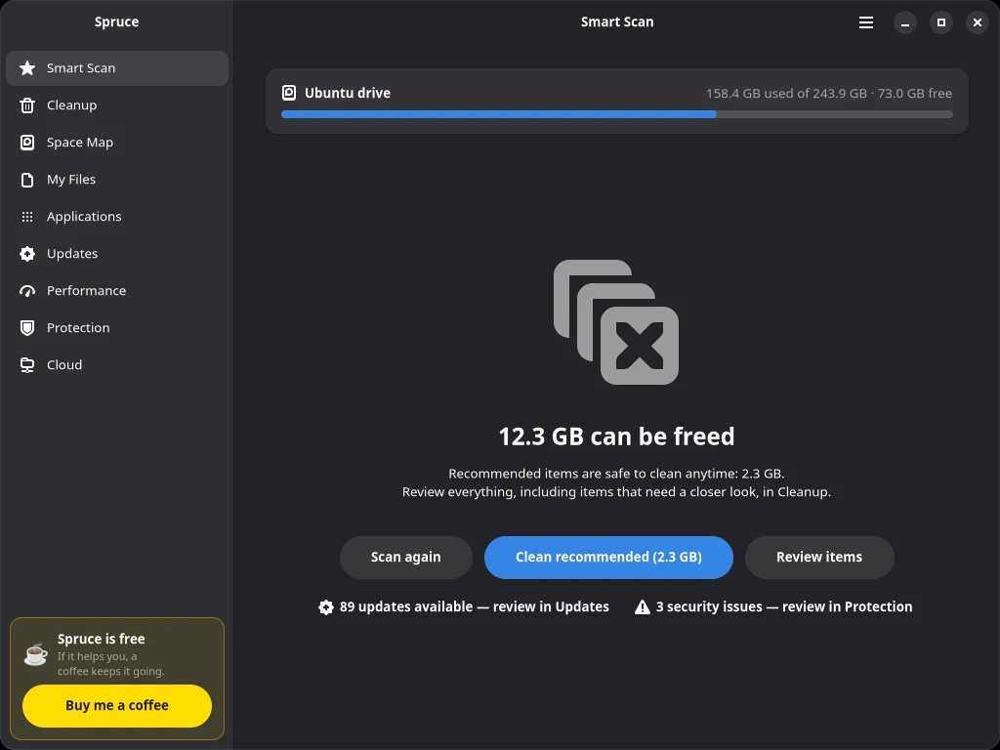
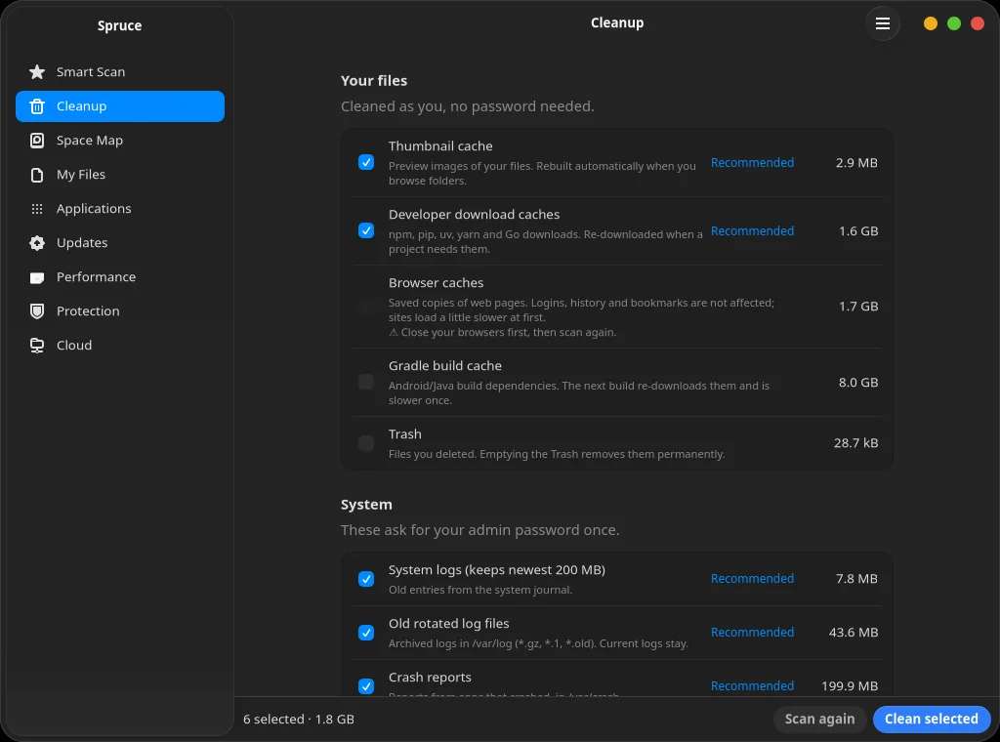
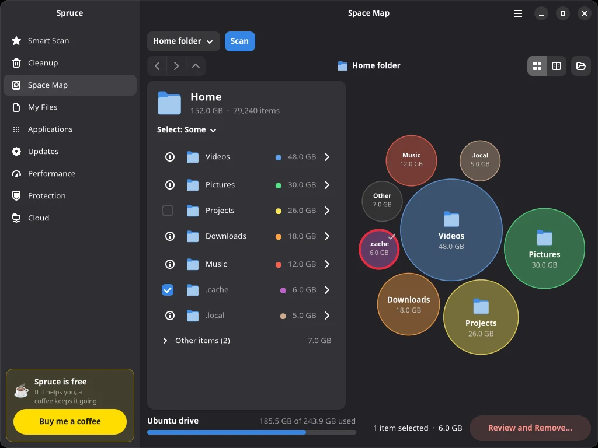
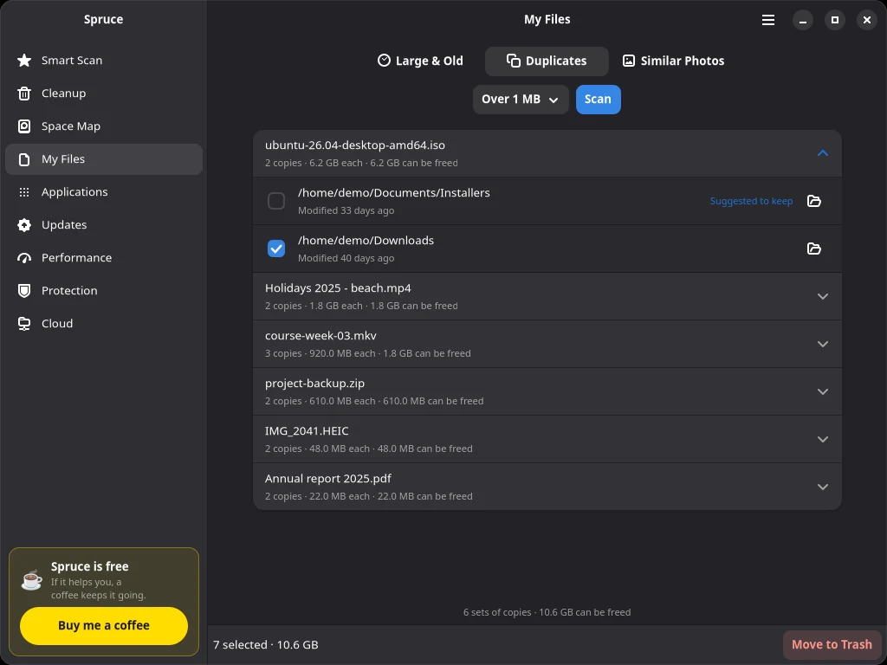
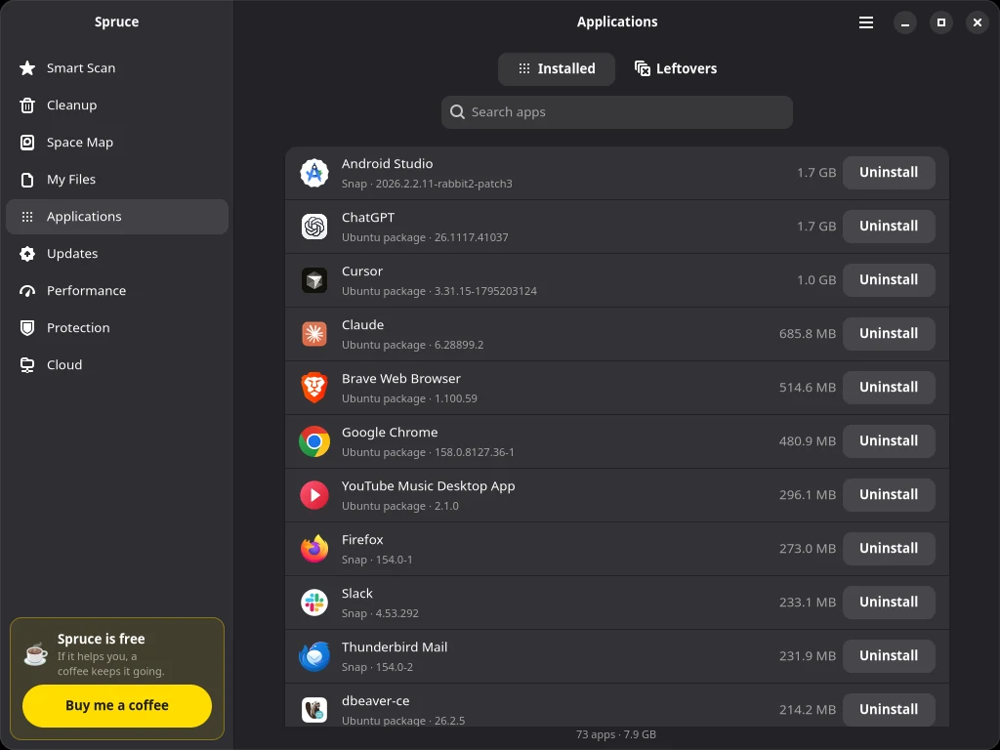
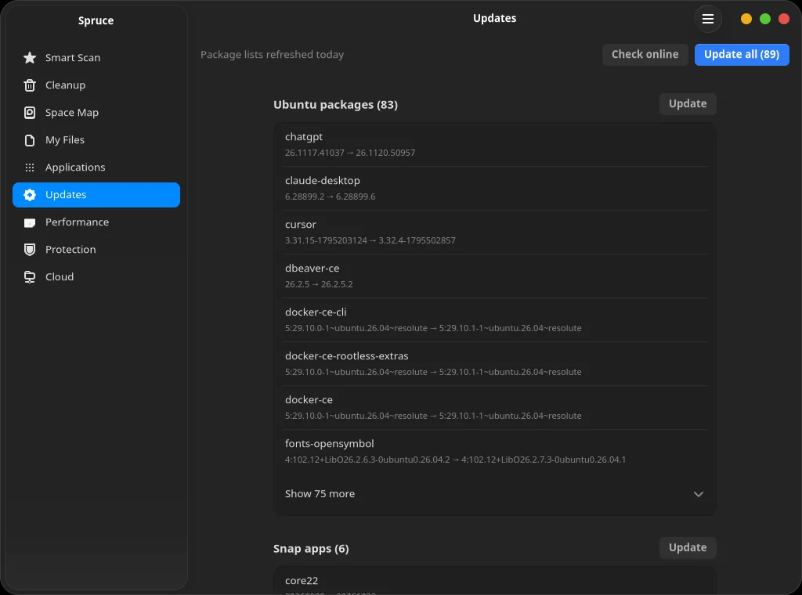
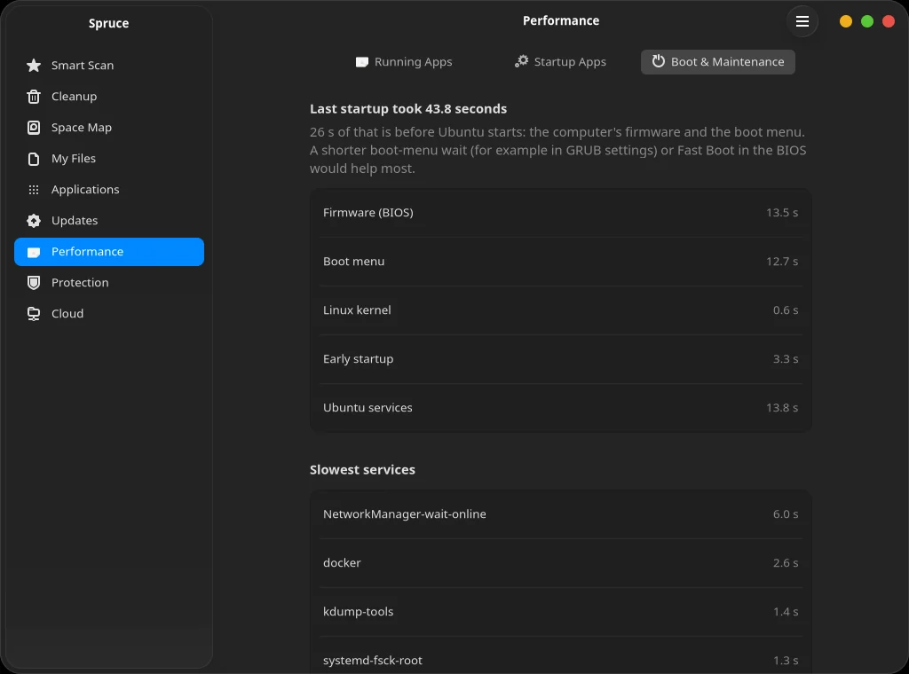
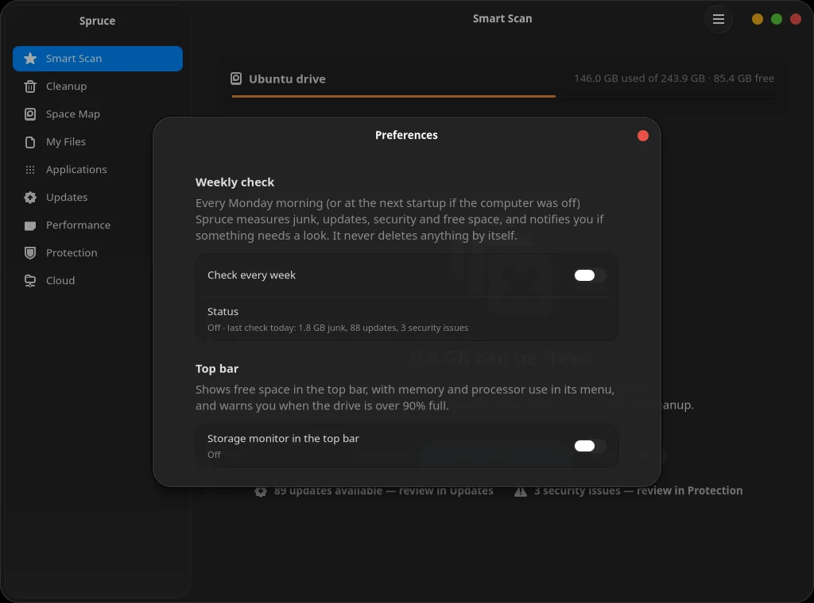

Spruce finds the junk that piles up on an Ubuntu computer, shows you exactly what fills your drive, removes apps without leaving a trace, keeps every kind of software up to date, and checks your security settings. Ten tools in one window — and nothing is ever deleted until you have seen it and said yes.

Smart Scan checks all of it with one button. Each tool also has its own page in the sidebar for when you want the details. All of it is free, with nothing locked.
One button measures junk, available updates and security issues, and tells you what is worth doing.
Every cleanable item, with its size and a plain-English line about what it is.
See what fills your home folder, the whole drive, or any folder you choose, and clear it out.
The files you forgot about, and the copies you did not know you had.
Uninstall apps completely, and tidy up after apps that are already gone.
Ubuntu packages, Snaps, Flatpaks and device firmware, all in one list.
What is using your memory and processor, and why startup is slow.
Eleven security checks, and a virus scanner when you want one.
What fills your Google Drive or OneDrive, and which of it you also keep locally.
Optional, and both off until you switch them on.
Real screenshots. Click any of them to see it full size.







Space Map and Duplicates are shown with an example home folder.
A cleaner earns trust by what it refuses to do. Spruce is built around a few rules that are enforced in code, not left to good intentions.
Every clean, uninstall and update lists what it will do and waits for a yes.
Large files, duplicates, photos and leftovers are moved to the Trash, never deleted outright.
A group of duplicates or similar photos can never be emptied completely.
Core packages like the desktop, the Files app and the kernel cannot be uninstalled, and an uninstall that would drag one of them along is refused.
When cleaning up after an app, its caches are pre-selected. Its profiles, logins and documents are not.
A browser’s cache is only offered once the browser is closed, so nothing is pulled out from under a running app.
Every cleanup is written to a history log on your own computer, so you can always see what was removed and when.
Some jobs — clearing system logs, removing old Snap versions, installing updates — need administrator rights, so Spruce asks for your password. That request deserves an explanation, because a cleaner with root access could do a lot of damage.
Spruce itself always runs as you. The system work is done by a small, separate helper that is installed owned by the system and can only perform a fixed list of named actions. It never accepts a file path or a command from the app, and it checks every request again itself — so even a confused or compromised app could not talk it into deleting something outside that list. Ubuntu’s own password dialog tells you it is Spruce asking, and why.
Cleaners have a reputation for promising magic. Spruce does not “boost RAM”, defragment anything, or invent problems to scare you into clicking.
Its virus scanner is ClamAV, the standard open-source engine. On Linux it is most useful for catching Windows and Office malware in files you download and might pass on; it is not a reason to stop being careful.
Some security settings it can only report, not change: disk encryption needs a reinstall, and Secure Boot lives in your computer’s firmware. Where a fix could lock you out — like changing how remote login works — Spruce explains the change instead of making it for you.
Every part of Spruce is free and open source, with no ads, no tracking, no account and nothing locked. If it saved you some time or a few gigabytes, a coffee helps keep it going: new cleanup rules, fixes for new Ubuntu releases and new tools.
Entirely optional. Spruce works the same either way.
Spruce runs on Ubuntu 24.04 or newer with the standard GNOME desktop, and installs as a single package of about 50 KB — it uses only what Ubuntu already ships. The app is free software under the GNU GPL version 3, with every feature included.
The easiest way is Spruce's PPA, so it updates with the rest of Ubuntu (Ubuntu 24.04 LTS and 26.04 LTS). In a terminal, run:
sudo add-apt-repository ppa:pahalsoft/spruce
sudo apt install spruce
Or download the package from GitHub and install it with
sudo apt install ./spruce_all.deb; that works on any Ubuntu 24.04
or newer, and you update it yourself. The source code is on GitHub too, and
bug reports are welcome there.
On other Linux distributions, the Flatpak edition has the tools that work on your
home folder: cleanup of your own caches and Trash, Space Map, large and old files,
duplicates, similar photos and cloud drives. Download
spruce.flatpak
and install it with flatpak install --user spruce.flatpak.